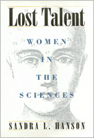

Tackling the important questions about women's experiences in science and mathematics that previous research has left unanswered
Tackling the important questions about women's experiences in science and mathematics that previous research has left unanswered


 Tackling the important questions about women's experiences in science and mathematics that previous research has left unanswered
Tackling the important questions about women's experiences in science and mathematics that previous research has left unanswered

|  |
Lost TalentWomen in the SciencesSandra L. Hansoncloth EAN: 978-1-56639-446-8 (ISBN: 1-56639-446-5) |
"Sandra Hanson demonstrates the progressive loss of women to science—and science to women—through discriminatory actions and policies of key institutions and unequal resources offered to young women and men. Her detailed analyses disclose the complex process by which gender, race and class determine who stays in science—and why."
—Mary Frank Fox, School of History, Technology, and Society, Georgia Institute of Technology
In this pathbreaking book, Sandra Hanson asks what compels so many talented young women to leave the professions of science and mathematics? When do they leave and why? Why do equally qualified girls and boys have such different experiences with science education? What are the patterns for women who do stay in school and pursue a scientific career? What difference does family background make? Exactly how significant are differences of race and class?
In this research project, Hanson examines several unusually large and subtle, nationally representative, longitudinal data sets. The data include information on a multitude of distinctions by race, class background, school experiences, school resources, to name a few. Hanson examines this information with a particular focus on the differences in achievement within and across the disciplines, varying access to physical resources, and differential activities in both math and science for young women in the education process.
The challenge faced by the United States in the next two decades is developing a balanced, qualified, and well-trained workforce for jobs in science and other technical fields. For Hanson it includes equity for women and creating conditions such that young girls who start out doing well in science do not end up with little training and knowledge. The recovery of this "lost talent" is the central concern of this book.
Excerpt available at www.temple.edu/tempress
"Lost Talent compels us to think about the experiences of women in science in an entirely new and comprehensive way—how they differ from men in their activities, achievement, access, and attitudes about science. Particularly refreshing is Hanson's recognition that women scientists are not a monolithic group. I found her broadened focus on women of various race and ethnic groups more inclusive and informative that previous books on women in science."
—Shirley Vining Brown, Senior Research Scientist, Special Populations Group, Educational Testing Service
"Lost Talent is a pathbreaking work. It is concerned with the relatively low long term rate of female involvement and achievement in science. Much of the effort to understand the origins of these phenomena has focused on single factors, usually examined at a moment in time, and frequently based on unrepresentative samples and inconsistent measures. Sandra Hanson seeks to remedy many of these deficiencies in this book. Her dynamic, multidimensional approach deepens our insights into the complex patterns and produces new evidence about the trajectories of these women among the various states of science involvement within the education system and their major determinants. It will be required reading for all who seek to better our understanding of this important issue."
—Alan Fechter, President, Commission on Professionals in Science and Technology
"... [Hanson's] work is thorough and her analyses sound.... the complexities which she discusses and the factors influencing women's choices and experiences in the sciences are those which all Americans, concerned about the vast amount of lost talent, need to consider and to act upon."
—H-Net
"Lost Talent adds complexity to the commonly used science pipeline imagery and moves forward the discussion about women's rate of attrition from that pipeline. While I recommend the book to anyone interested in gender issues and science education, I strongly encourage all science educators, particularly those who maintain that science and science education is genderless, to give Lost Talent a serious reading."
—Gender and Society
Read a review from The Journal of Higher Education, Volume 68.6 (November/December 1997), written by Chris M. Golde (pdf).
Read a review from Social Forces, Volume 76.1 (September 1997), written by Joyce Tang (pdf).
Read a review from Contemporary Sociology, Volume 26.5 (September 1997), written by Jerry A. Jacobs (pdf).
"Sandra Hanson has tackled her subject scientifically, with convincing methodology, using multivariate statistical models applied to impressively large samples and subsamples. Many intriguing, carefully documented and substantiated trends emerge. The book is well worth the purchase price, especially for those whose careers involve programmatic educational changes and reforms."
—Contemporary Women's Issues Database
Tables and Figures
Acknowledgments
1. Introduction
2. Science Experiences in School and Beyond
3. Science Resources
4. Gender and Resources
5. Who Survives in Science?
6. Conclusions
Appendix: Measures and Analysis Design
References
Index
 | Sandra L. Hanson is Associate Professor of Sociology at The Catholic University of America, and the author of numerous articles on gender and the workforce. |
Women's Studies
Education
Science
Labor and Social Change, edited by Paula Rayman and Carmen Sirianni.
Labor and Social Change, edited by Paula Rayman and Carmen Sirianni, includes books on workplace issues like worker participation, quality of work life, shorter hours, technological change, and productivity, as well as union and community organizing and ethnographies of particular occupations.
© 2015 Temple University. All Rights Reserved. This page: http://www.temple.edu/tempress/titles/993_reg.html.